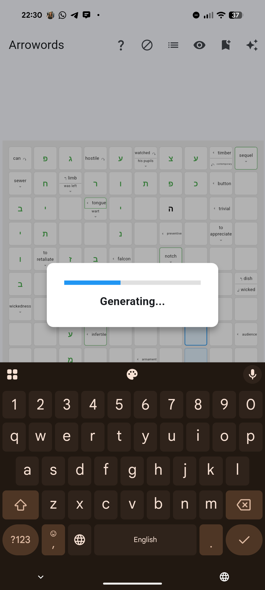
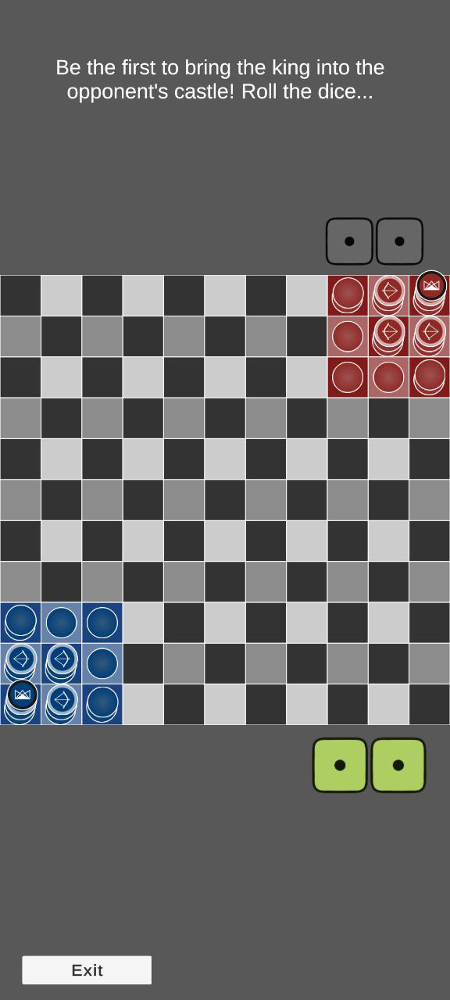
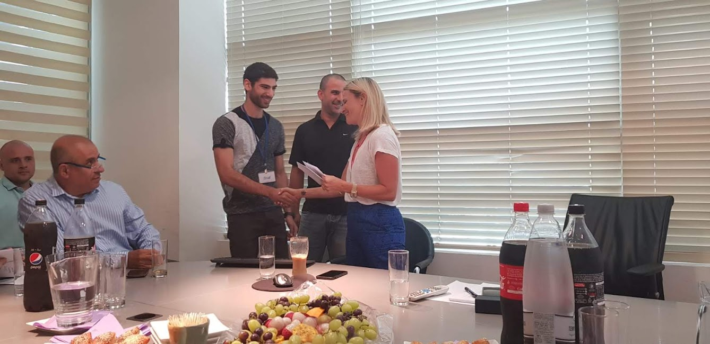
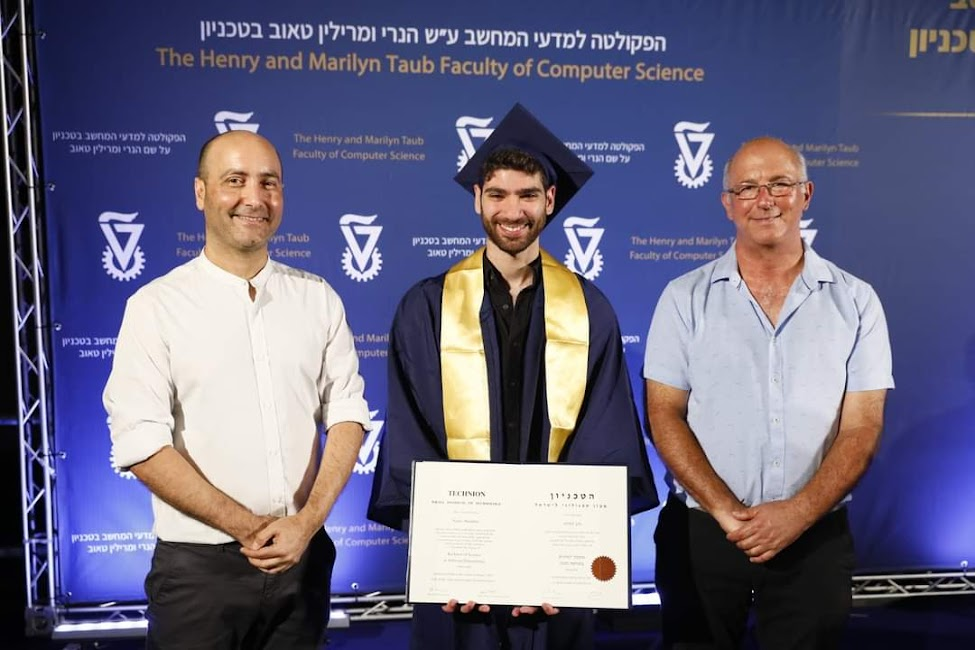
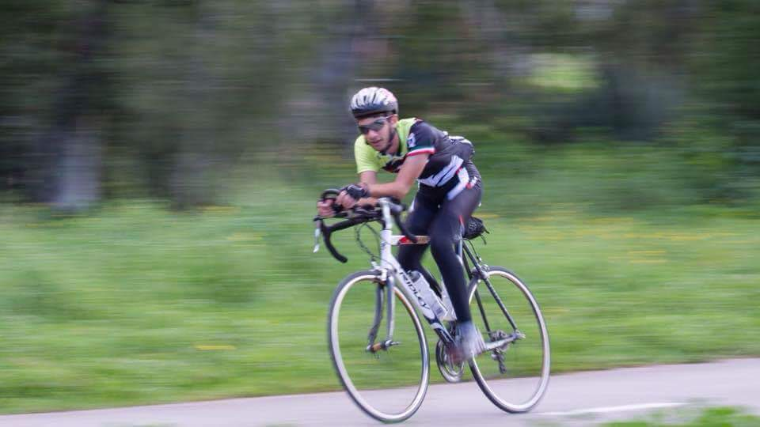
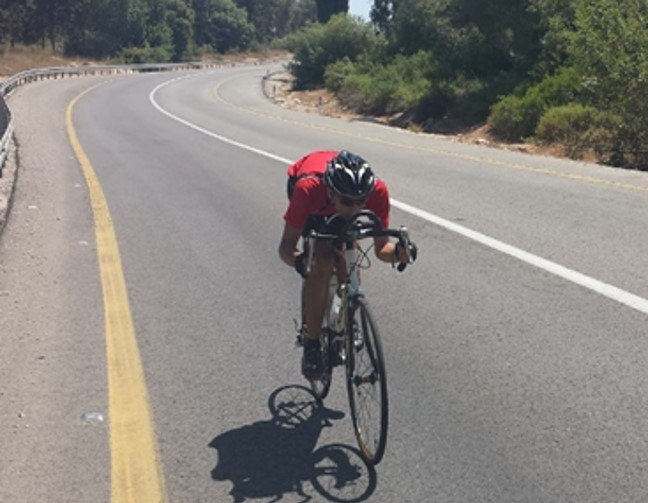
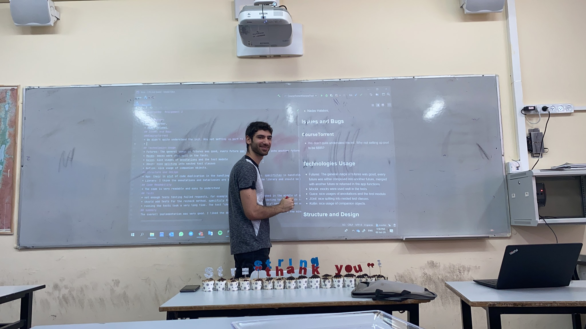

Software Engineer • Game Designer • Educator
I solve real-world problems and build ideas from the ground up. From physics algorithms to strategy games to educational tools — I turn vision into reality.
I'm a software engineer who loves solving real-world problems and bringing ideas to life from the ground up. Whether it's calculating cyclist power through physics algorithms, designing a strategic board game from scratch, or building a vocabulary app that adapts to each learner, I thrive on turning vision into reality.
My journey started in high school with computational projects that tackled real challenges for cyclists, continued through computer science at the Technion, and now includes game design, app development, and education. I believe the best solutions come from understanding problems deeply and building everything yourself—from concept to execution.

Your words, your arrowords — generate custom arrowords in real time to master any topic or language.

A brand-new strategic board game. Will you be able to dominate all fronts?

Awarded annually to only 5 top computer science students nationwide for academic excellence and contribution to the field.
Learn more about Final Award
B.Sc. in Software Engineering with multiple President's and Dean's honors. 2nd place in Multi-Agent Search Competition (AI course).

1st PlaceSchwartz-Reisman Competition • 2015
Developed a computational system to measure real-time cycling power by analyzing resistance forces (gravity, air drag, friction, acceleration) and velocity. Implemented physics-based algorithms using Newton's laws to calculate power output without expensive commercial power meters ($2000+).

2nd PlaceSchwartz-Reisman Competition • 2016
Continuation project analyzing cyclist performance dynamics in downhill scenarios. Advanced data collection, analysis methodologies, and real-world testing.

Ironi Yud-Dalet High School, Tel Aviv
I taught computer science at the same school where I studied just four years earlier. I quickly became a mentor, teacher, and big brother to my students across 10th and 11th grades.
Although the beginning was challenging, I developed my own teaching style and built personal connections with students. We covered the curriculum, explored enrichment topics, solved puzzles, and discussed life beyond the classroom.
This experience taught me that even one year of teaching can leave a lasting impact. I look forward to returning to education in the future, and inspiring others to join the mission of improving education in Israel.
Youth Science, Hebrew University
2022 – 2023
Designed and delivered cybersecurity curriculum for advanced high school students, covering topics from network security to reverse engineering.
Interested in my projects or want to collaborate? Feel free to reach out!
nadavhalahmi560@gmail.com